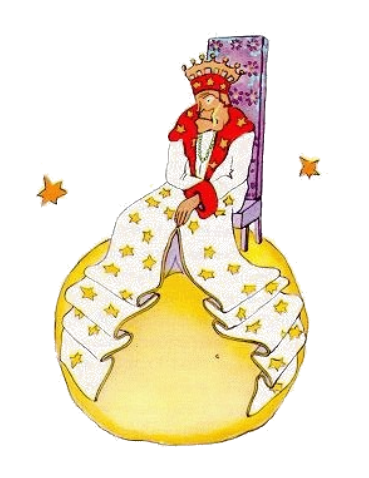

10
Il esset in li region del asteroides 325, 326, 327, 328, 329 e 330. Dunc il comensat visitar les por ocupar se e por educar se.
Sur li unesim habitat un rey.
Li rey tronat vestit in purpur e in un hermeline-mantel sur un simplic e anc tre reyal tron.
"Ho! Vi! Un subjecte", li rey vocat quande il videt li litt prince. E li litt prince questionat se: Qualmen il posse conosser me benque il ancor nequande ha videt me?
Il ne savet que it es por li reyes del munde tre simplic: Omni homes es subjectes.
"Aproxima te que yo vide te plu bon", li rey dit e esset tre fier que il finalmen esset por alquí li rey.
Li litt prince circumspectet se por un loc por sedentar se, ma li tot planete esset covrit per un magnific hermeline-mantel. Dunc il restat stant e il hiat pro que il esset fatigat.
"It es contra li etiquette hiar in li presentie de un rey", li monarch dit. "Yo interdicte it a te."
"Yo ne posse supresser it", li litt prince respondet totmen confuset. "Yo ha fat un long viage e yo ne ha dormit ..."
"Tande", li rey dit, "yo comanda a te que tu hia. Yo ne ha videt alquí hiar desde quelc annus. Li hiada es por me un raritá. Adavan! Hia ancor un vez! It es un comande!"
"To terre me, nu yo ne posse plu ...", li litt prince balbutiat e rubijat.

"Hm, hm!", li rey respondet. "Nu tande ... yo comanda a te hiar bentost, hiar bentost e bentost ..."
Il murmurat un poc e it semblat que il esset incolerat. Nam it esset tre important por li rey que su autoritá es respectat. Il ne tolerat desobiedentie. Il esset un absolut monarch. Ma pro que il esset anc tre generosi, il dat rasonabil comandes. "Si yo vell ordonar", il frequentmen dit, "si yo vell ordonar a un generale transformar se in un movette, e si ti generale ne vell obedir, tande it ne vell esser li culpa del generale. It vell esser mi culpa."
"Esque yo have li permission sedentar me?", li litt prince questionat timidmen.
"Yo ordona a te que tu sedenta te", li rey respondet e tirat un extremitá de su hermeline-mantel majesticmen vers se.
Ma li litt prince esset astonat. Li planete esset micrissim. Súper quo ti rey posset regnar?
"Senior ...", il dit al rey", yo demanda pardon que yo questiona vos ..."
"Yo comanda te que tu questiona me", li rey hastat dir.
"Senior ...súper quo vu regna?"
"Súper omnicos", li rey respondet con grand simplicitá.
Li rey monstrat con un important geste a su planete, al altri planetes e al stelles.
"Súper to omnicos?", li litt prince dit.
"Súper to omnicos", li rey respondet.
Nam il ne esset solmen un absolut monarch, ma anc un universal. "E li stelles obedi vos?"
"Certmen", li rey dit. "Ili obedir a chascun parol de me. Yo ne tolera alqual desobedentie."
Tal potentie tre astonat li litt prince.
Si li lit prince vell har havet it self, it vell esser possibil por il assister ne quarant-tri, ma cent o ducent descensiones del sole durant un e li sam die, sin que il vell har devet mover su fotel. E pro que il sentit se un poc trist in li memorie de su litt e abandonat planete, il devenit corageosi e petit li rey por un favore.
"Yo vole vider un descension del sole... Fa me li joya ... Comanda li sole descender..."
"Si yo vell ordinar a un generale volar secun li maniere del papiliones de un flor al altri flor o scrir un tragedie o transformar se in un movette, e si ti generale ne vell obedir, qui vell esser ínjust, il o yo?"
"Vu vell esser it", li litt prince dit con certitá.
"Corect. On deve demandar de chascun person to quo il posse executer", li rey respondet. "Li fundament del autoritá es li rason. Si tu comanda a un popul marchar e precipitar se in li mare, it va revoltar. Yo have li jure demandar obedientie pro que mi comandes es rasonabil."
"E quo es nu con mi descension del sole?", li lill prince amemorat li rey. Li litt prince nequande obliviat un question, si il ha posit it alquande.
"Tu va haver tui descension del sole. Yo va comandar it. Ma yo va atender in mi sagiesse del soverano til li conditiones es favorabil por it.
"Quande it va esser?", li litt prince informat se.
"Hm, hm!", respondet li rey qui in prim studiat un grand calendare, "hm, hm! To va esser circa ... ye ... to va esser in li véspere ye circa clocca sett e quarant! E tu va vider qualmen on obedi me."
Li litt prince hiat. Il regrettat pro li omisset descension del sole. Il ja enoyat se un poc.
"Yo ne have ci nequó por far plu", il dit al rey. "Yo va departer!"
"Ne departe", li rey, qui esset tant fier haver un subjecte, respondet, "yo nomina te al ministre!"
"A qual ministre?"
"Al ... al ministre del justicie!"
"Ma it hay nequí pri qui yo vell posser judicar!"
"On ne save to", li rey dit. "Yo ancor ne ha fat li viage circulari tra mi reyatu. Yo es tre old, yo ne have spacie por un carre e ped-ear far me fatigat."
"O! Ma yo ja ha videt", dit li litt prince, qui inclinat se por regardar al altri látere del planete, "que ne es alquí ta..."
"Dunc tu va judicar pri te self", li rey respondet a il. "To es lu max desfacil. It es mult plu desfacil condamnar se self quam judicar pri altres. Si tu successa judicar pri te self bon, tande tu es un ver sagio."
"Yo", li litt prince dit, "yo posse judicar pri me ucunc yo es. Por to yo ne besona habitar ci."
"Hm, hm!", li rey dit,"yo pensa que sur mi planete alcú es un old ratte. Yo audi it in li nocte. Tu vell posser esser li judico pri it. Tu va condamnar it de témpor a témpor al morte. Talmen su vive va depender de tui judicament. Ma tu va amnestiar it chascun vez por sparniar it. Hay solmen un."
"Yo ne ama condamnar al morte", li litt prince respondet, "e yo pensa que yo va ear nu."
"No", li rey dit.
Ma li litt prince, qui hat ja fat su preparationes, ne volet ofender li old monarch:
"Si punctual obedientie es important por vor majestá, vu vell posse dar me un rasonabil comande. Por exemple vu vell posser comandar a me desaparir intra un minute. It sembla a me que li conditiones es favorabil ..."
Pro que li rey replicat nequó, li litt price hesitat, poy il comensat departer con un sospire.
"Yo fa te a mi legato", li rey hastat se vocar detra il.
Il dat se li aparentie de grand autoritá.
Li grand homes es strangi, li litt prince dit a se self sur su viage.